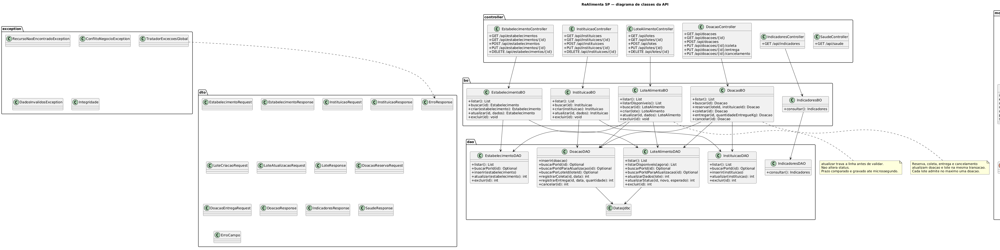
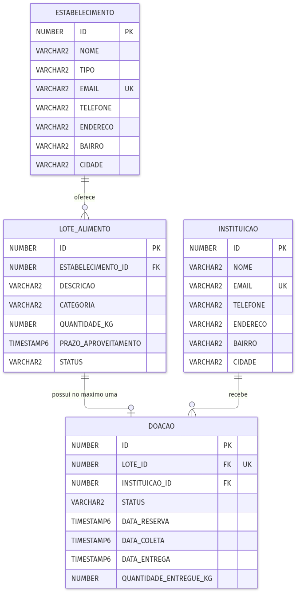
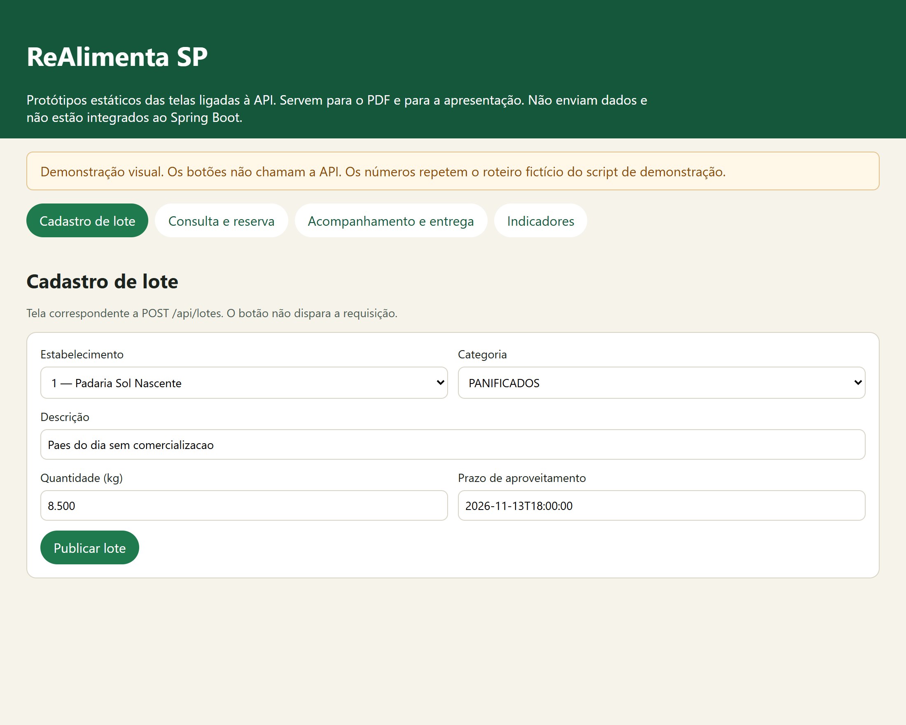
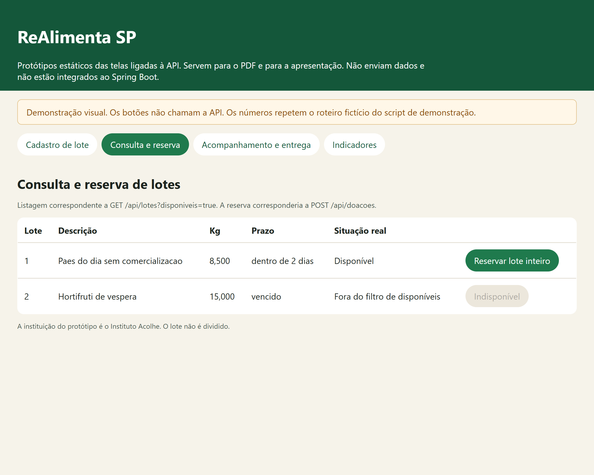
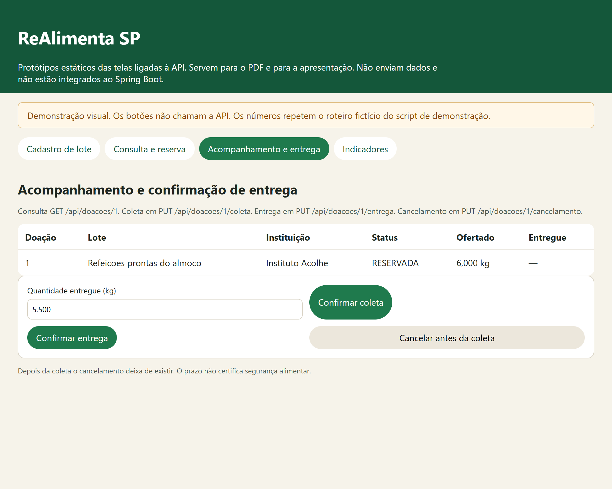
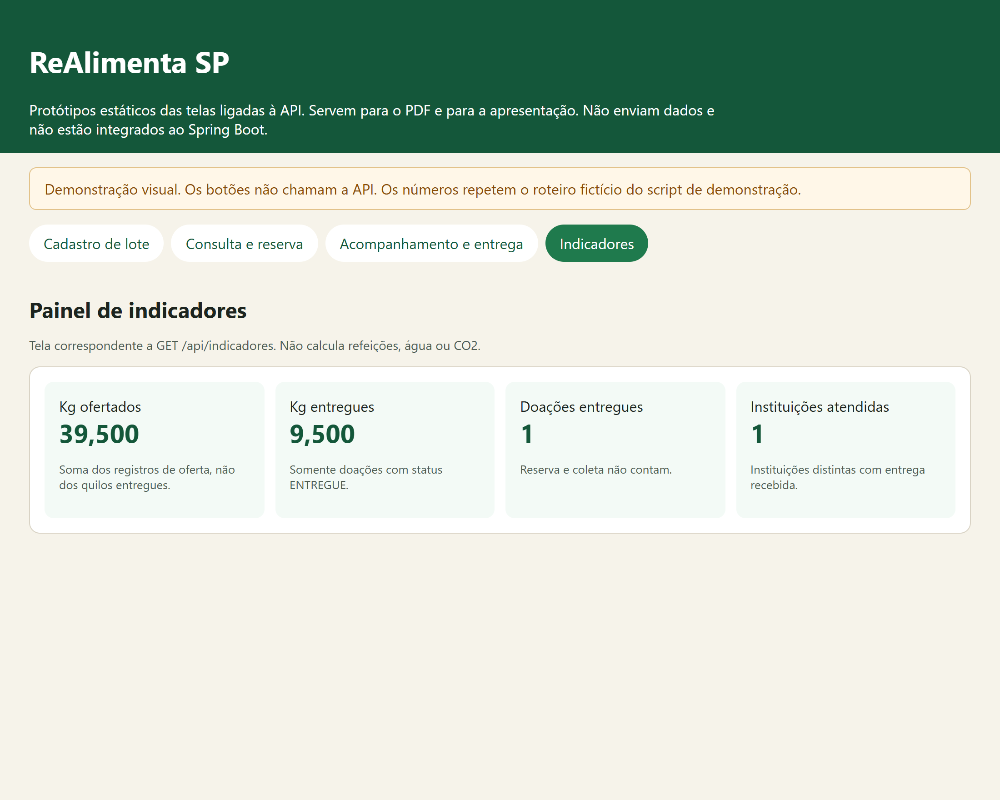

FIAP — Faculdade de Informática e Administração Paulista
Engenharia de Software — 2º ano
Disciplina: Domain Driven Design — Java
API de publicação, reserva, coleta e entrega de alimentos excedentes
Estabelecimentos comerciais produzem alimento excedente que ainda pode ser aproveitado, enquanto instituições sociais buscam doações. Sem um fluxo simples e registrado, a oferta não chega de forma organizada até quem precisa.
O ReAlimenta SP, neste repositório, é uma API REST que controla cadastros, publicação de lotes, reserva por uma instituição, coleta, confirmação de entrega ou cancelamento antes da coleta, além de indicadores agregados. Não há aplicativo mobile, painel web integrado, autenticação, roteirização, previsão de excedentes nem inteligência artificial neste escopo.
Uma API com regras de negócio explícitas e persistência em Oracle permite ao grupo demonstrar modelagem, camadas, integração com o banco definido em Database Design e operação em ambiente hospedado, sem substituir o trabalho de front-end ou de outros módulos da disciplina.
JdbcTemplate).O projeto segue camadas separadas, alinhadas ao domínio:
Estabelecimento, LoteAlimento, StatusDoacao, etc.).JdbcTemplate (consultas, inserts, updates, FOR UPDATE onde necessário).@Transactional) em reserva, coleta, entrega e cancelamento.TratadorExcecoesGlobal, sem expor stack trace ao cliente.A subida confirma conexão Oracle em ConexaoInicial: se o banco estiver inacessível, a aplicação encerra em vez de responder saúde sem banco.
| Item | Versão / observação |
|---|---|
| Spring Boot | 4.1.2 |
| Java (bytecode) | 21 (java.version) |
| Web | spring-boot-starter-webmvc |
| Persistência | Spring JDBC + HikariCP |
| Driver Oracle | ojdbc17 (BOM Spring Boot) |
| Testes automatizados | 46 testes (JUnit/MockMvc), sem Oracle no mvn test |
Em desenvolvimento local, a compilação usou OpenJDK 25 (Android Studio JBR) com release 21 quando o JDK do PATH era 17. O Dockerfile oficial usa Eclipse Temurin 21 para build e runtime.
Fuso padrão: America/Sao_Paulo. Prazos de lote em TIMESTAMP(6), comparados em microssegundo em DatasJdbc.
O diagrama resume controllers, BOs, DAOs, models e DTOs, com relacionamento entre lote e doação (0..1).

docs/diagrama-classes.puml). Protótipo de modelagem; o código é a referência de implementação.As tabelas ESTABELECIMENTO, INSTITUICAO, LOTE_ALIMENTO e DOACAO foram criadas e populadas no schema Oracle do grupo (Database Design). Os scripts em src/main/resources/db/ são referência; a aplicação não os executa (spring.sql.init.mode=never).

docs/der.mmd) das quatro tabelas do schema Oracle do grupo.No schema do grupo, as sequences SEQ_ESTABELECIMENTO, SEQ_INSTITUICAO, SEQ_LOTE_ALIMENTO e SEQ_DOACAO usam INCREMENT BY 1, NOCACHE e iniciam em 5 nos scripts de referência. Em consulta de leitura (19/11/2026), LAST_NUMBER era 8 com MAX(ID)=7 nas quatro tabelas — coerente com NOCACHE (não confundir LAST_NUMBER com o próximo ID em cenários com cache).
Carga de referência no ambiente compartilhado, via API: 5 estabelecimentos, 5 instituições, 7 lotes, 5 doações.
Capturas de docs/prototipos.html. São protótipos estáticos (wireframes de apresentação): os botões não integram a API Spring Boot. Os valores exibidos no painel do HTML seguem o roteiro fictício do arquivo; a API em produção respondeu 87 kg ofertados e 9,5 kg entregues em 19/11/2026.
Corresponde a POST /api/lotes: estabelecimento, categoria, descrição, quantidade e prazo.

Listagem com foco em lotes disponíveis (GET /api/lotes?disponiveis=true) e ação de reserva (POST /api/doacoes).

Acompanha status, coleta, entrega e cancelamento antes da coleta (endpoints PUT em /api/doacoes/{id}/...).

Visualização agregada de GET /api/indicadores (kg ofertados, kg entregues, contagens de entrega).

Base em produção: https://realimenta-java.onrender.com. A rota raiz / não define página inicial e pode responder 404 — use os caminhos /api/....
| Método | Caminho | Finalidade | Respostas principais |
|---|---|---|---|
| GET | /api/saude | Disponibilidade do processo | 200 — não consulta Oracle |
| GET | /api/estabelecimentos | Listar estabelecimentos | 200 lista; 500 falha de banco |
| GET | /api/estabelecimentos/{id} | Buscar por id | 200 / 404 |
| POST | /api/estabelecimentos | Criar | 201 + Location / 400 / 409 |
| PUT | /api/estabelecimentos/{id} | Atualizar cadastro | 200 / 404 / 409 |
| DELETE | /api/estabelecimentos/{id} | Excluir se sem lote | 204 / 409 |
| GET | /api/instituicoes | Listar instituições | 200 |
| GET | /api/instituicoes/{id} | Buscar por id | 200 / 404 |
| POST | /api/instituicoes | Criar | 201 |
| PUT | /api/instituicoes/{id} | Atualizar | 200 |
| DELETE | /api/instituicoes/{id} | Excluir se sem doação | 204 / 409 |
| GET | /api/lotes | Listar lotes | 200; query disponiveis=true |
| GET | /api/lotes/{id} | Buscar lote | 200 / 404 |
| POST | /api/lotes | Publicar lote | 201 |
| PUT | /api/lotes/{id} | Atualizar dados (sem status) | 200 / 409 |
| DELETE | /api/lotes/{id} | Excluir sem doação | 204 / 409 |
| GET | /api/doacoes | Listar doações | 200 |
| GET | /api/doacoes/{id} | Buscar doação | 200 / 404 |
| POST | /api/doacoes | Reservar lote | 201 / 409 |
| PUT | /api/doacoes/{id}/coleta | Registrar coleta | 200 |
| PUT | /api/doacoes/{id}/entrega | Registrar entrega | 200 |
| PUT | /api/doacoes/{id}/cancelamento | Cancelar antes da coleta | 200 |
| GET | /api/indicadores | Indicadores agregados | 200 |
POST /api/doacoes
Content-Type: application/json
{"loteId":1,"instituicaoId":1}
{"kgOfertados":87.000,"kgEntregues":9.500,"doacoesEntregues":1,"instituicoesComEntrega":1}
| Variável | Uso |
|---|---|
| DB_URL | jdbc:oracle:thin:@oracle.fiap.com.br:1521:ORCL |
| DB_USERNAME | Usuário do schema (ex.: rm565341) |
| DB_PASSWORD | Senha — somente ambiente ou painel hospedado |
| PORT | Porta HTTP (8080 local; Render injeta) |
No Windows, scripts/run-oracle-local.ps1 define URL e usuário FIAP e solicita a senha com Get-Credential, sem gravar em disco.
Comandos: .\mvnw.cmd test (sem Oracle); .\mvnw.cmd spring-boot:run com variáveis definidas.
docker build -t realimenta-sp . — compila e testa dentro da imagem JDK 21. Execução com -e DB_URL -e DB_USERNAME -e DB_PASSWORD -e PORT.
Não reaplique 01_estrutura.sql / 02_dados_demonstracao.sql no schema compartilhado já populado. Não execute -Poracle-it nesse schema.
Serviço: Web Service Docker, plano gratuito, health check /api/saude, variáveis Oracle no painel (ver render.yaml).
URL: https://realimenta-java.onrender.com
| Endpoint | HTTP | Resumo observado |
|---|---|---|
| /api/saude | 200 | status: UP, fuso America/Sao_Paulo |
| /api/estabelecimentos | 200 | 5 registros (confirma leitura Oracle) |
| /api/instituicoes | 200 | 5 registros |
| /api/lotes | 200 | 7 registros |
| /api/doacoes | 200 | 5 registros |
| /api/indicadores | 200 | 87 kg ofertados; 9,5 kg entregues; 1 entrega; 1 instituição |
Estes testes foram somente leitura. Não comprovam POST/PUT concorrentes nem o perfil de integração oracle-it.
Links de demonstração:
| Tipo | Comando / meio | O que comprova |
|---|---|---|
| Unitário + BO | mvnw test | Regras com mocks; 46 testes, 0 falhas (nov/2026) |
| HTTP mockado | MockMvc nos controllers | Contrato JSON e status; sem banco |
| Integração Oracle | -Poracle-it | Escrito em FluxoOracleIT; não executado no schema do grupo |
| Produção | GET na URL Render | Leitura real no Oracle do grupo (19/11/2026) |